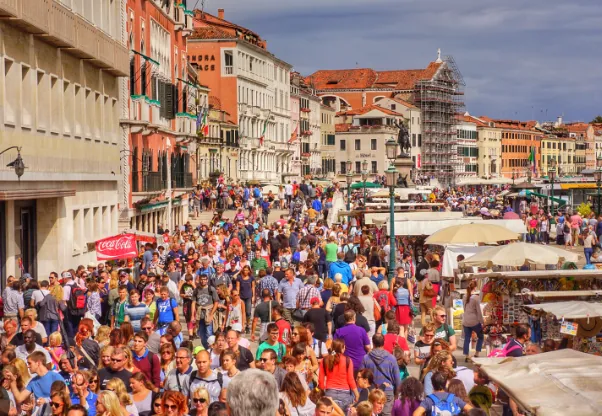
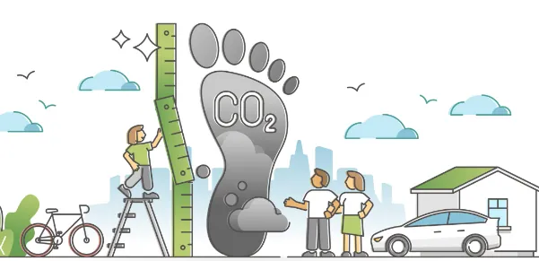
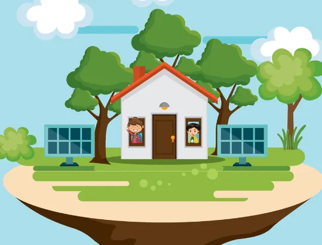
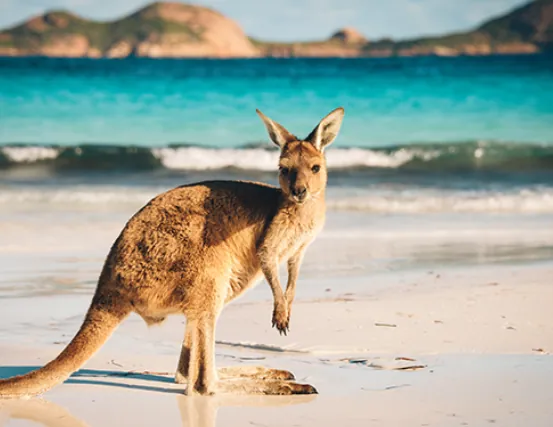

Ways to protect local biodiversity
Lesson 4 — Speaking
10Five stops in 45 minutes
- 🎬
Warm-up
Students protect a forest
5 min - 🔤
Vocabulary
4 key words
5 min - ✅
Tasks 1–2
Ways to protect biodiversity
9 min - 🌳
Tasks 3–4
On a field trip
23 min - 🏁
Wrap-up
Exit ticket
3 min
Warm-up
Students protecting a forest
5 minutesWhat did the students do to protect biodiversity?
No internet? Groups list what students their age can do to protect a local forest. The group with the most ideas wins.
What did the students do?
What did the group of students do in the video to protect biodiversity? discussed reasons for deforestation and its effects · developed a list of actions to restore the forest · ran a community radio programme · organised role-plays to raise awareness
Vocabulary
Four key words
5 minutes



Tasks 1–2
Ways to protect local biodiversity
9 minutesTick the correct boxes
1. banning the hunting of wild animals ✓
2. planting local trees, flowers, and other plants ✓
3. promoting mass tourism ✗
4. educating people about the importance of biodiversity ✓
5. increasing your carbon footprint ✗
➕ e.g. follow walking paths when outdoors · reduce the amount of water you use
Why is it important? How will it help? What can you do to help?
Example: Plants play an important role in ecosystems. They provide food and shelter for many animal species. Each plant supports the ecosystem and biodiversity of the local area. We can help by researching the local flora, and planting more native plants.
Two more ways
Banning the hunting of wild animals: Wild animals play an important part in different ecosystems and food chains. The hunting of some animals, such as bears, tigers, or rhinos, has caused a rapid decline in their populations and may lead to their extinction.
Educating people about the importance of biodiversity: Human activities have direct effects on ecosystems. If people are aware of the importance of biodiversity, they may act to limit deforestation, stop illegal hunting, and protect local habitats.
Tasks 3–4
On a field trip to a national park
23 minutesWhat would you say?
1. Some of your classmates want to collect some rare insects/flowers for their collection.
Example: ‘You shouldn’t do that for several reasons. First, rare plant and animal species are endangered. Second, if people start killing or collecting them, they will soon disappear. Finally, this will harm local biodiversity and have a serious effect on the balance of the local ecosystem.’
Situations 2–4
2. Some classmates have brought some snacks and want to feed the wild animals in the park.
3. You see some classmates throwing rubbish, such as plastic bottles, paper, and cans, on the grass and in the water.
4. Some classmates want to collect wood to build a fire in the park.
You shouldn’t do that for several reasons…
2. Feeding the wild animals Wild animals eat their own food and human snacks may cause health problems for them. Feeding them may also be dangerous as they can attack you.
3. Throwing rubbish Animals may eat the plastic waste and get sick. Rubbish pollutes the water and soil and damages natural habitats.
4. Building a fire A fire may damage plants and spread easily in hot, dry, windy conditions, causing wildfires that kill animals and burn trees.
Vote for the best response
- ✅ clear advice
- 💡 good reasons
- 🔗 First · Second · Finally
- 🗣️ fluent delivery
⭐ Extension · each group invents a new situation and challenges another group to respond.
Before you leave…
1. Name two ways to protect local biodiversity. ban hunting · plant native plants · educate people
2. Why is promoting mass tourism NOT a good way? Too many tourists can damage habitats and harm wildlife.
3. What does carbon footprint mean? the amount of carbon dioxide produced by a person’s or company’s activities
Homework
1. Do the Speaking exercises in the workbook.
2. Write your group’s best response to one situation in Task 3.
3. Prepare for Lesson 5 — Listening: human impact on ecosystems.